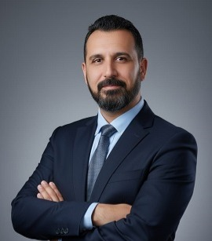

أستاذ مساعد متميز يتمتع بخبرة تزيد عن ١٨ عامًا في التعليم العالي، متخصص في علوم الحاسوب في جامعة بابل، العراق. يمتلك سجلًّا حافلًا في تطوير وتقديم المناهج الدراسية لمرحلتي البكالوريوس والدراسات العليا في مجالات الحوسبة السحابية، وإنترنت الأشياء، وأمن الشبكات، والبرمجة. لديه خلفية قوية في البحث العلمي مع نشر أبحاث حديثة في الذكاء الاصطناعي وتقنية البلوكتشين. باحث فولبرايت (وزارة الخارجية الأمريكية) حصل على زمالة بحثية في جامعة ريدنغ، المملكة المتحدة، وخريج برنامج شراكة لاهاي (هولندا) وتونس. ملتزم بالتميز التربوي، وتوجيه الطلبة، والمساهمة في الرسالة الأكاديمية من خلال التطوير المهني المستمر والبحث العلمي التعاوني. يُدرّس حاليًا أيضًا مادتي الذكاء الاصطناعي وأساسيات تكنولوجيا المعلومات ضمن الدبلوم العالي في القيادة الرقمية في المعهد العالي لتدريب وتأهيل القادة في بغداد، ويُدرّس مادتي الحوسبة السحابية والشبكات الافتراضية لطلبة المرحلة الثالثة قسم الأمن السيبراني في جامعة الشعب.
Dedicated Assistant Professor with over 18 years of experience in tertiary education, specializing in Computer Science at the University of Babylon, Iraq. Proven track record in developing and delivering curriculum for undergraduate and postgraduate levels in Cloud Computing, IoT, Network Security, and Programming. Strong background in academic research with recent publications in AI and Blockchain technology. A Fulbright Scholar (U.S. Department of State) with a research fellowship at the University of Reading, United Kingdom, and a graduate of The Hague (Netherlands) and Tunisia partnership programme. Committed to pedagogical excellence, student mentorship, and contributing to the academic mission through continuous professional development and collaborative research. Currently also lecturing on Artificial Intelligence and IT fundamentals within the Higher Diploma in Digital Leadership at the Higher Institute for Training and Qualifying Leaders in Baghdad, and teaching Cloud Computing and Virtual Networking to third-year Cybersecurity students at the University of Al-Shaab.